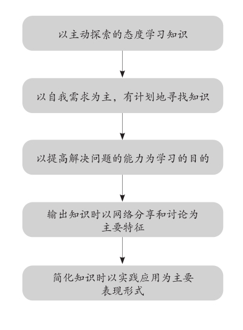

第二十章
好东西太多，也会消化不良
正式开始本章的讨论之前，我希望读者先回答下面几个问题：
1.你每年阅读几本书（或者从来不读）？
A．5本以上
B．3到5本
C．从来不读
2.你是否深知自己的“知识弱项”？
A．非常清楚
B．遇到问题才知道
C．从不知道，也不关心
3.你从什么地方学习知识？
A．有目的地从不同的渠道
B．一直从固定的渠道，比如老师、教科书或前辈那里
C．无论什么渠道，都被动地接受知识
4.你发现知识有误时是否在学习上做出过调整？
A．及时调整
B．看情况
C．从不调整
5.你在学习中遇到问题时常被惯性思维左右吗？
A．从不
B．很少
C．经常
6.你如何证明自己对某一个知识点独立思考了？
A．我会充分地对比和论证
B．我会坚持自己的固有立场
C．我缺乏判断力
7.你每天坚持写学习心得吗？
A．几乎每天
B．偶尔
C．从来不写
8.你对有疑义和分歧的知识会写下自己的深度分析吗？
A．会
B．有需要时会
C．从来不会
这八个问题是美国管理协会设计的一次测试，测试的目的是评估一个人的学习方式是否有效和是否具有出众的收集资料的能力。在学习中，最怕的就是一个人漫无目的、没有重点地乱学，同时还自以为是，觉得自己学到了很多东西。从这八个问题中，我们能看到一个人是否找到了好的学习方法，是否可以高效地收集资料，对比不同的观点，消化关键的知识，然后产生自己的见解。
测试做起来很简单，你只需要根据实际情况打勾就行了。然而，八个答案全部是A的人，美国管理协会的专家发现不超过0.1%。他们从全美30所大学、中学和近百家企业中征集了上万人参加测试，得出的这个数据非常严谨。你完全没看错，人们平时想象中的学习能力与实际情况并不相符，也许你觉得自己很善于学东西，其实距离优秀还差得很远。因为这八个问题牵涉到一个人在学习时最重要的三种能力。
第一：主动学习的能力。
第二：怀疑反省的能力。
第三：原创思考的能力。
事实上，我们大部分人只能归于B和C这两种学习类型。这些年来，即便我的阅读范围相对普通读者比较广博和专深，却也无法避免出现思考和判断上的错误，其中很多还是低级的错误。因此，我对增加读书量的学习效果充满了怀疑，扩大读书量真的能提高我们的知识水平吗？实际上，好东西太多，是会消化不良的。
正因如此，我们在学习中的最后一个重要的步骤是简化所学的知识。什么是简化？打个比方，就像洗菜做饭一样，材料买回家，要清水洗净，剔除不需要的部分，留下的干净有营养的部分，再分别摆放到盛器里，一目了然。费曼说：“首先是对知识的分解，把你需要的、核心的东西找出来；其次是条理化，逻辑化，把这些剩下的知识整理好，成为一个整体。做好这两项工作，我们才能吸收这些知识。如果你不能把一个科学概念梳理得逻辑简单，通俗易懂，三两句话就能讲明白，那就说明你对这个概念是一知半解的，并没有学好。”
很多人会倾向于使用一些复杂的词语或者专业术语等来掩盖自己不明白的东西。这是一个事实，例如经常有人在解释某个知识时中英文混合，或讲些晦涩的理论。看上去很高大上，其实他只是在糊弄自己，因为他不知道而且也不明白。
简化和吸收是费曼学习法的最后一个步骤，目的是将学到的知识制作成一个精小的“知识包”，融入进自身的知识体系。当你自始至终都可以用小学生能够理解的语言重新总结知识，你就成功地使自己在更深的层次上理解了该知识，在不同的知识点之间确立了牢固的联系，也发现了它们的本质。一般而言，经过了这一步，我们一定会清楚地知道自己在哪里还有不足，该怎样进行下一步。
如何简化知识的要点？
第一，打开知识的“重要性开关”。
即，哪些知识很重要，哪些知识一般重要，哪些知识不重要。为它们列一个优先级，排好顺序，全力吸收那些重要的知识。
平时，当我们在向别人讲完一个东西的时候就会发现一个现象，之前心里没有印象、没有逻辑的知识此时突然清晰起来，你能感觉到有些东西是重要的，有些东西则不重要。但在讲述之前，你可能对此并不清楚。
就是说，通过三次复述，我们可以打开知识的“重要性开关”，既能训练自己的语言组织能力，还能检查这些知识点，形成一个清晰的逻辑，看看哪些部分才是自己最需要的，然后把它们留下来。
第二，将知识从复杂回归简单。
费曼认为，所有复杂的知识体系都有一个简单的核心逻辑，就像一团乱麻会有一根总的线头，找到这个线头往外一拽，这团乱麻便轻松地被化解了。要把学到的知识简化，我们就要提升自己的思考维度，站在高处往下看，找到里面的那个核心。
比如股票知识，如果你要深入理解一只上市公司的股票，应该从哪些方面入手才能迅速抓住本质呢？在整个学习的过程中你一定会接收到大量的知识点，包括但不限于估值、价格、资金最近的动向、未来的趋势、K线形态，还有PE、净资产收益率等关键的信息。这些不同的知识点组合到一起，形成了一个判断股票价值的集合体，也是一个复杂的数据系统。假如你要都搞清楚，将是十分艰巨的工作，也易使你偏离问题的正轨。就像很多人明明买到了估值很低、数据很漂亮的股票，却一天天地跌下去一样。他们对此莫名其妙，其实是他们在学习股票知识的过程中对于吸收和分析出了问题。
首先，你必须完全明白的是，无论一项知识包含多少概念和分支，它都有一个当仁不让、至关重要的核心。这个核心才是你理解和吸收该知识的钥匙，找到它，就能将复杂的知识简化成一个易于理解的版本——简单到随便一个人都可以看明白。
其次，简化知识就是完善我们的思维模型，从知识中总结和提炼要点，本身便是对思维能力的锻炼。一边学习有用的知识，一边提升我们的思维能力，这个步骤可以起到一箭双雕的作用。我建议读者在总结知识的要点时，准备一张清单，不仅用到大脑，还要用到笔和手，把提炼出来的要点写在纸上，随时修改，对学习的效果更有帮助。
简化所学知识的过程其实就是要求我们不断地用简洁的语言去解释一样东西，一直到我们的大脑像呼吸和喝水一样轻松地理解它。经过简化的知识能在大脑中把要点更有效地转化为长时记忆，然后影响大脑的思维和决策，使知识发挥它的力量。这些要点也起着索引的功能，当需要重点使用该知识时，我们就能在大脑中按图索骥，快速将内容调取出来。
如何吸收我们需要的部分？
不得不说，人在社会上的竞争优势并非全部源于学习，它还与自身拥有的资源和天赋有着莫大的关系。这是我们不得不承认的事实。但是，随着时代的进步、学习方式的进化和人与人竞争模式的改变，“知识吸收能力”对人的竞争性越来越重要。最近十年中，世界上优秀的学府都开始研究和重视提高学生以知识为基础的“知识吸收能力”（the absorptive capacity），这是当下一段时间的教育和组织研究中最重要的概念之一，属于知识转移的范畴。
这种能力具体指的是什么呢？用一句话概括，就是获取、简化、吸纳、转化和创新知识的能力。从几个关键词看，这种能力也恰恰深嵌在费曼学习法的几大步骤中，帮助我们锁定知识、理解知识、消化知识和创造知识。
第一，获取知识。
这是一项基础能力，我们要从外部有效地获取知识，确立学习的方向，制订学习的计划，并且充分地了解和判断哪些知识对自己具有关键的作用。
第二，简化知识。
即以必要的筛选、整理等手段提炼出知识的骨架和要点，浓缩出知识的精华，提高内容留存率，为吸收知识做好准备。
第三，吸纳知识。
知识的吸纳能力强调的是，我们要将那些核心的知识长久地保存在大脑中，成为一种长时记忆，并且做到真正地理解它，又游刃有余地向别人阐释出来，实施以教代学的学习策略。不能被吸纳和阐述的知识是很难被我们的大脑真正接受的，往往只是一种短时记忆。
第四，转化知识。
知识的转化能力指的是，我们要把学到的外部知识与已有的知识有效地结合，使新知识转化为自己知识体系的一部分，变成可随时使用的能力。
第五，创新知识。
知识的创新即开发新知识的能力，通过有效的学习，在已有知识的基础上创造新的知识，甚至超越原有的知识。最终，我们从知识的被动学习者和接收者，变成知识的主动创造者和提供者。
具有了这种能力，当你吸收知识中自己需要的部分时，会发现要做的事情很简单，只要和自己的生活、工作目标结合起来，再用好上面五个关键词，就可以高效地将自身需要的知识吸收进自己的知识体系。
比如，我们学完了财务课程，这个课程可能包含不同的部分，有纯粹的会计知识，有上市公司的审计知识，有侧重财务管理的知识。这时你要看看对自己最有价值的知识是哪一些。如果你在审计部门工作或未来担任上市公司的财务审计职位，审计知识就是你重点吸收的内容；如果你的就业目标是财务总监，那么就要学好财务管理的知识。在吸收这些知识时，你还要做好两大类的工作，第一是提高自己对潜在知识的吸收能力，包括知识的获取和吸纳；第二是提高自己对实际知识的吸收能力，也就是知识的转化和开发利用，在学到的基础上还要努力地创造，成为知识和技能的提供者，上升到让别人学习你的境界。
在线学习中如何简化知识？
狭义上的在线学习是通过电脑或者手机与互联网连接，创造一个虚拟的网络教室，参与老师的网上授课，进行在线的学习和讨论。这依然是一个集体学习的概念。但目前及未来的在线学习显然已经不局限于此，它具有十分灵活的方式，在各种环境中和条件下都可以开展，只要你能够连接网络。
虽然在线学习有它的缺点，比如无法当面讨论，缺乏教室内集体学习的氛围，也容易因没有约束而懈怠。但它的好处是，学习不受地点、空间和时间的限制，并且能和现实中一样与老师互动。另外，广义上的在线学习也包含我们以个人目的为基础的自主学习，比如为了掌握某种知识、了解某个领域而自发地从互联网上寻找相关的资讯。这个过程没有老师的参与，完全由你一个人主导整个进程。目前，这样的在线学习已越来越流行。
当脱离面对面的接触进行学习时，我们就会更清晰地感受到费曼学习法的巨大应用空间。费曼倡导的以教代学的思想也在其中有十分清晰的体现。比如，我们可以将所学的知识在线输出，通过分享给别人来验证自己的理解是否正确，随时修正观点等，都能加快学习的进度，提升学习的质量。
“在线学习”中简化知识的原则：
第一，以实际效果为前提。
就是说，在简化知识时要先检查自己的学习成果，我学了哪些，记住了哪些，对我而言比较重要的内容又是哪些？在线学习缺乏老师和同学的当面沟通，没有直接交流，在输出方面存在一定的障碍。此时，我们要加强对学习成果的检查。
第二，以实践应用为目的。
必须结合现实的实践应用来简化知识，提炼其中的要点和关键部分。我们从互联网搜集知识时，务必要以应用为目标。即：“在线学习”具有色彩鲜明的应用性。
第三，重视可以促进联想的内容。
由于互联网本身的开放性和海量的信息，搜索资料比较方便快捷，因此在简化所学的知识时，一定要重视那些富有联想性的内容，通过这类的内容继续展开二次、三次学习，向问题的纵深拓展。这能加强我们学习的效果，促进原创性观点的产生。
第四，避免在不同平台学习重复的内容。
没有计划的在线学习很容易东打一枪，西打一炮，盲目地寻找资料，搜索知识，就可能出现就某一项知识重复学习的情况。比如在不同的网页、平台或网络课程中学到了相同的理论或观点，浪费时间。遇到这种问题时，要及时地删除和简化所学的内容，保留有效的学习，去除无效和重复的内容。
第五，和我们当下的工作相结合。
无论任何形式的学习，我们都要将学习与工作密切地结合起来。在线学习最重要的意义就是衔接学习与工作，不仅将工作搬到了互联网上，也把工作中的学习以在线的形式完成。有个词叫“学以致用”，就是说我们的学习要能将知识和技能贡献出来，帮助到当下的工作，帮助到其他人，一起提高知识水平。
第六，重视知识的成长性。
我们从在线学习中也要建立完整的知识体系，以成长性的态度对待所学的知识。这不是完成一件迫于无奈的任务，或者是贪图省时省力而采取的偷懒行为，而是有计划地将不断更新的知识、技能、经验从互联网上吸收过来，融入自己的知识体系。
当我们以“费曼学习法”的视角展开在线学习时：
